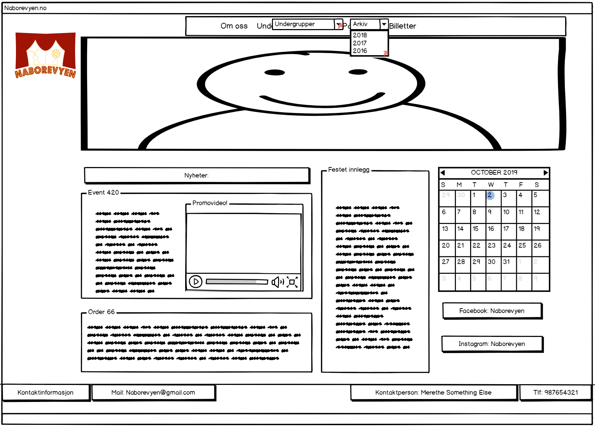
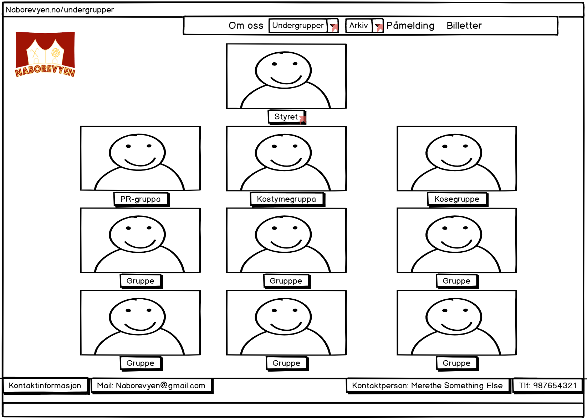
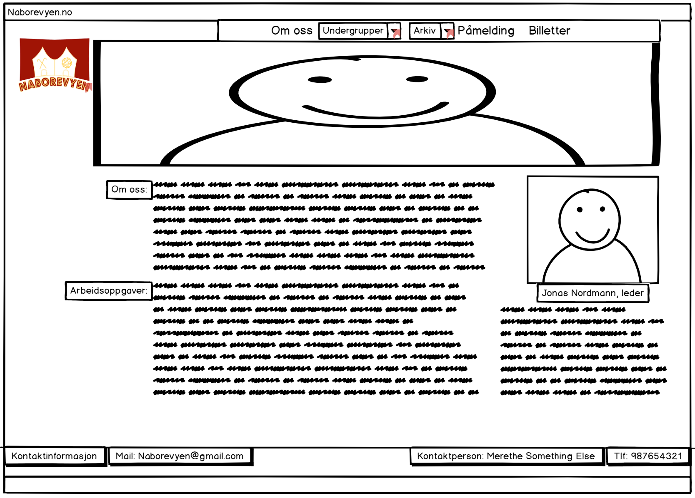
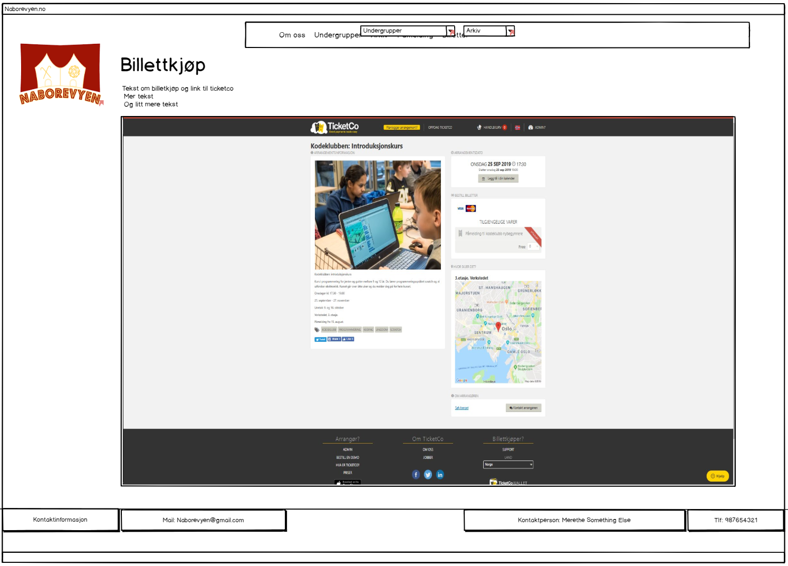

Klient: Jonas Eide, PR-sjef i Naborevyen. Naborevyen er en studentrevy som hvert år arrangeres av Spanskrøret og Timini, linjeforeningene til Lektorutdanning med Realfag og Nanoteknologi henholdsvis. Styret i Naborevyen ønsker en nettside de kan bruke til promotering og informasjonsflyt for interesserte partier og interne medlemmer. PR-sjefen har blitt satt opp med ansvaret for å være vår primære klient, ettersom vårt prosjekt går innenfor hans arbeid med promotering av revyen.
Sidens formål er å gi Naborevyen sin egen offisielle nettside hvor de kan gi ut informasjon og promotere seg selv på. Målet med denne siden er 3-delt. Første punkt er å gi en følelse av profesjonalitet til Naborevyen. For eksempel, i situasjoner hvor de ønsker at relevante partier skal se på revyen som et seriøst foretak av studenter kan det å ha en egen nettside være en fordel, som et bevis på legitimiteten. Andre punkt er å tilby en side hvor ethvert interessert parti kan finne all relevant informasjon om Naborevyen, som kontaktinformasjon til nøkkelpersoner, beskrivelser av gruppene i revyen, link til påmelding og viktige datoer å holde av. Tredje punkt er gi muligheten for Naborevyen å selv i større grad kontrollere hvordan de presenterer seg selv, f.eks. i farger, logoer og kalender, og å gi en mer oversiktelig måte å presentere dette enn hva Facebook tillater.
Navigasjonsstrukturen til siden kommer til å være hierarkisk, da et av ønskene til kunden var at brukere skulle kunne nå så mange av sidene som mulig på så få klikk som mulig. Vi har en startside som du kommer til når du skriver in webadressen til nettsiden, og denne skal du alltid kunne komme tilbake til ved å trykke på logoen til kunden. Siden vil ha en navigasjonsbar som alltid ligger langs toppen av siden, så du kan alltid navigere fra enhver side, til enhver side. Navigasjonsbaren vil linke til fem generasjon en undersider, og to av disse vil igjen linke til flere generasjon to undersider. Du kan komme deg til andre generasjons undersider enten ved å trykke på hyperlinkene til første generasjons undersidener på navigasjonsbaren i hovedsiden, og deretter trykke på en av linkene til andre generasjonen i denne første generasjons undersiden, eller du kan gå direkte til undersiden ved å la musen sveve over linken til hovedundersiden, og deretter trykke på linken til undersiden som da dukker opp. Siden vil i tillegg til en navigasjonsbar, også ha en footer som er felles for alle sidene på hjemmesiden, som viser kontaktinformasjon til kunden. Logoen til kunden vil også alltid vises øverst i venstre hjørne, så man kan klikke på den og alltid komme seg tilbake til startsiden.
Designavgjørelsene ble tatt ut ifra det første møtet vi hadde med klienten. Der kom de med spesifikke krav til farger, logo og navigasjonsstruktur. Ellers fikk vi ganske stort spillerom med utformingen på siden. Det eneste kravet der var at det skulle være lett å finne fram, og at strukturen på sidene skulle være ryddig. De var veldig glad i hvordan siden til Spanskrøret var utformet, så vi har tatt en del inspirasjon fra denne. De spesifikke stilene som kommer til å gjelde for alle sidene er som følgende:
Startsiden er siden man ender opp på når man følger linken til siden... 
Dette er en side som linker videre til sidene med de 11 spesifikke undergruppene. På denne siden skal det være et bilde og en tittel til hver undergruppene, og både bilde og tittelen skal være hyperlinker til disse sidene. Man skal ikke trenge å besøke denne siden for å komme til undergruppene, men det skal være mulig å besøke den for å få litt mer generell info før man besøker siden til en spesifikk undergruppe. 
Denne siden har info om undergruppen "Revystyret". Dette inkluderer styremedlemmer med titler, bilde av styremedlemmene, og info om når styremedlemmene ble valgt og hvor lenge de er valgt inn i styret for.
Disse sidene har info om de ulike undergruppene. De skal inneholde en beskrivelse av hva undergruppen gjør og har ansvar for. De skal også inneholde et bilde av gruppelederen, et gruppebilde eller enkeltbilder av gruppemedlemmene, og navn på alle medlemmene i undergruppen, eventuelt med en kort beskrivelse. Navnene på de ulike gruppene er Bygg, Kostyme og Rekvisitter, Dans, Musikk og Band, PR og Design, Velferd, Skribent, Økonomi, og Teknikk. 
Denne siden skal brukes til å selge billetter til Naborevyen. Naborevyen bruker TicketCo til å selge billetter, så vi ønsker helst å implementere TicketCo-siden til Naborevyen ved å bruke APIen til TicketCo. Hvis dette ikke lar seg gjøre eller er i strid med prosjektkravene, kommer linken til denne siden heller til å linke direkte til TicketCo-siden, og denne siden vil ikke eksistere. Det unike for denne siden er at vi må implementere en API, og dette blir en av de mest interaktive sidene på hjemmesiden. 
Denne siden skal brukes til påmelding til de forskjellige undergruppene. Siden vi ikke har mulighet til å bruke databaser, tenker vi å lage en form i HTML som integrerer med Google Forms, og legge inn påmeldinger til ulike grupper i et Google regneark. Det unike med denne siden er at vi må implementre en API, og at dette er den eneste siden der brukerne må skrive inn tekst som skal lagres.
Arkiv-siden skal inneholde bilder og videoer fra tidligere revyer. Den skal gjøre det enkelt å se de tidligere revyene på video, og også finne bilder til for eksempel promotering. Det unike med denne siden er at vi må embedde YouTube-videoer og lage bildeserier så man kan gå gjennom bildene fra tidligere år på en grei måte.
| Hva | Beskrivelse | Hvem | Frist |
|---|---|---|---|
| Generell informasjon | Bilder, tekst og annen relevant informasjon fra klienten. | Alle | 6. Oktober |
| Om_oss.html | Historisk informasjon om naborevyen, generell infoside. | Sander | 13. Oktober |
| Oversikt_undergrupper.html | Side med bilder og fordeling av de ulike undergruppene. | David | 13. Oktober |
| Undergrupper.html | Side med; Banner fra gruppeaktivitet. Informasjon om gruppa og dens arbeidsområder. Bilde av Gruppeleder + info om personen. | Eskild | 13. Oktober |
| Arkiv.html | Bildearkiv og innlagt youtube videoer. Skal sorteres etter år. | Hans Kristian | 13. Oktober |
| Hjemmeside.html | Hjemmesiden. Kalender, banner, some-plugs, nyheter. | Alle | 20. Oktober |
| Billettsalg.html | Innlagt billettsalg side. | Hans Kristian og Eskild | 27. Oktober |
| Påmelding.html | Enten: innlagt billettleverandør side. Eller: Link til billettleverandør. | Sander og David | 27. Oktober |
| Style.css | Stiler, Logo, bannere og diverse. (Dette skal arbeides med kontinuerlig fra start). | Alle | 27. Oktober |
| Header.js | Et script for å håndtere headeren, med dens rullgardin menyer. | Eskild | 3. November |
| Menyanimasjoner.js | Et script som animerer menyene til header og evt andre. | Sander | 3. November |
| Frontpage_news_feed.js | Et skript som fordeler plass og innhold i news-feeden på fremsiden. | David | 3. November |
| Form/Data_validation.js | Innmeldingsskjema med datavalidering. | Sander | 3. November |
| Sliding_banner.js | Bannere med bilder på rundgang. | Eskild | 3. November |
| Bildefokus.js | Brukere som trykker på bilde får det i fokus/slideshow effekt | David | 3. November |
| Arkiv.js | Script for å sortere, avgrense og søke i arkivet. | Hans Kristian | 3. November |
| READ_ME.txt | Brukermanual slik at revyen selv kan drifte nettsiden. | Alle | 3. November |
plan finnes på denne linken: https://docs.google.com/document/d/15phH-H2AjZ0nKw1TtMlU40i1hhGInlnitEd0roJW4L8/edit?usp=sharing